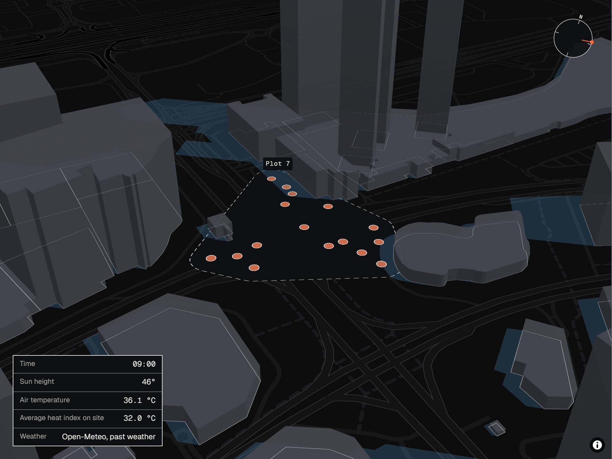

Follow the shade.
Stay under the limit.
Shade makes a work plan for a building site in summer heat. The plan moves crews into building shade as the sun moves.

- Worker-hours over the heat limit, ban only
- Extra hours, heat plan
- Extra hours, shade plan
02 The problem
The ban stops at 15:00.
The heat keeps going.
In the UAE summer, the law stops outdoor work from 12:30 to 15:00. This rule is the midday ban. Before 12:30 and after 15:00, the heat can still be above a safe limit. A site manager cannot easily see where the shade falls at each hour.
03 What it is
A work plan
that reads the sun.
Shade is a planning tool for building sites in the UAE summer. You give it the site, the workers and the tasks for one day. It gives back a plan for each worker from 05:00 to 20:00, in 15-minute steps.
The plan keeps each worker under a safe heat limit. A heat limit is the most heat a worker can safely take for one type of work. Heavy work has a lower limit than light work. The plan also obeys the midday ban.
04 How it works
Three steps,
every 15 minutes.
- 01
Find the shade
Shade uses real building outlines and the path of the sun. It finds the shade at each work spot every 15 minutes.
- 02
Set a heat limit
Shade uses the weather and the shade to find a heat index for each work spot. The heat index (WBGT) adds up air temperature, sun, wind and humidity. Published studies turn the heat index into safe minutes of work per hour.
- 03
Place the crews
A scheduler puts each crew at a work spot and a time where the work is safe. It also obeys the midday ban.
Move your pointer across the drawing to move the sun.
05 What we tested
Three plans. One site.
Real weather.
We compared three plans on the same site and the same day. Each day uses real weather from a past summer. We tested two sites, one in Dubai and one in Abu Dhabi. Each site has 14 workers and 12 to 16 building tasks.
- 1
Ban only
The plan stops work from 12:30 to 15:00. It does not check the heat at other times.
- 2
Heat plan
The plan keeps each worker under the heat limit. It treats every work spot as if it is in full sun.
- 3
Shade plan
The plan keeps each worker under the heat limit. It uses the heat at each work spot, in sun or in shade.
For each plan we count the extra hours. Extra hours are overtime after 17:00 plus work that moves to a night shift. One worker-hour is one worker for one hour.
06 Results
The ban is not enough.
A heat plan fixes it.
| City | Date | Morning weather | Over the heat limit, ban only | Extra hours, heat plan | Extra hours, shade plan | Verdict |
|---|
Extra hours are overtime after 17:00 plus work that moves to a night shift. All hours are worker-hours. Select a city to open that day in the planner.
07 Who it is for
For the site manager
and the safety officer.
- A
See where work is safe
The map shows where a crew can safely work at each time of day.
- B
Plan crews around the shade
The plan moves each crew into the shade as the shade moves across the site.
- C
Give each crew its plan
You can download the plan as a spreadsheet. It lists the times and work spots for each worker.
08 Sources
Every number
has a source.
Building outlines come from OpenStreetMap. Weather comes from Open-Meteo. The planner lists the full source for each number.